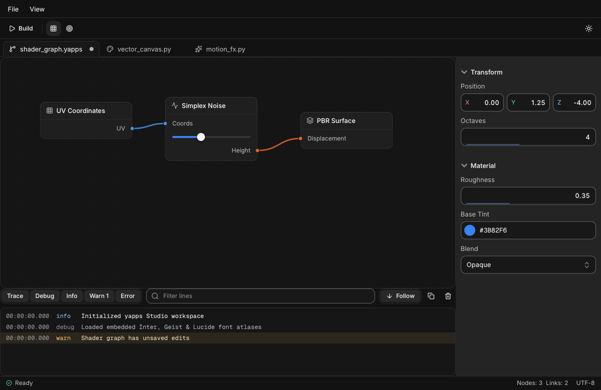

Native UI components for Python
Spring motion, keyboard support, and 150+ finished components—from one C99 engine in a ~652 KB native library.
pip install git+https://github.com/x017/yapps.git

- 150+components
- 652 KBnative core + fonts
- < 0.25 mslayout & draw pass
- Win · Mac · LinuxOpenGL & SIMD SW
- 0runtime dependencies
Everything a desktop app needs
Not a box of primitives: complete components designed together across 19 domains—virtualized grids, charts, Kanban boards, Bezier node graphs, and AI chat streams—ready without styling.
Browse all 150+ components →Data & Virtual Grids 10k+ rows
Virtualized sortable tables, KPI cards with sparklines, rolling odometer counters, treemaps, Sankey diagrams & heatmaps.
Charts & Sparklines Charts
Smooth cubic area/line charts, grouped & stacked bars, donut breakdowns, radar charts, funnels & inline sparklines.
Node Editor & Studio Tools
Pannable Bezier node graphs, typed property grids, C-backed ring-buffer log viewer, code blocks & diff views.
AI & Chat Primitives Streaming
Chat bubbles, prompt composer with attachments, model selector, token ring meters, artifacts, citations & voice orb.
Kanban, Gantt & Dates Planning
Drag-and-drop Kanban columns, interactive Gantt timelines, 7-day week schedules, calendars & date range pickers.
Asyncio & Threading GIL-Free
BackgroundRunner, AsyncBridge, thread-safe Channel[T], LogBuffer & app.wake() from any worker.
Your interface is plain Python
Every widget is a function or with scope that draws itself and returns what happened. Start with a 20-line functional closure, pass explicit procedural dicts, or scale into isolated Component, View, and Router classes.
Make it yours
Light and dark themes, eight calibrated perceptual OKLCH accents, and 34 semantic tokens your own custom canvas drawing follows automatically. Click any swatch to try it live.
Theming & custom brand tokens →accent=ui.Accent.BLUE # #0562ef (light mode)Small, fast and careful
Native Python desktop apps should open instantaneously, sleep at 0% CPU when idle, and run identically inside headless Linux CI containers without Xvfb.
Custom GPU backends & LTO builds →-
0% idle CPU
Releases the Python GIL while sleeping on OS window events and wakes only on input, springs, or
app.wake(). -
~498 KB wheel
Includes the compiled C99 core, OpenGL 3.3 + SIMD software renderer, Inter, Geist Mono, and 168 Lucide icons.
-
Headless pytest ready
Pass
headless=Trueor setYAPPS_HEADLESS=1to drive inputs and capture pixel-exact PNGs in CI. -
Bring your own GPU
Consume flat
DrawDatavertex/index buffers directly in Vulkan, Metal, DirectX 12, or ModernGL.
Learn it in an afternoon
Seven step-by-step guides take you from your first window to complete Functional/Procedural and Object-Oriented desktop applications.
Start with Getting Started →- 01 Getting started Install yapps, open your first window, and master the value-returning frame loop & ID scopes. Read →
- 02 Functional & Procedural Build closures, flexbox shells, overlays, and a full Personal Budget Tracker step by step. Read →
- 03 Object-Oriented (OOP) Structure large apps with Application, Component, View, Router, Store & an Incident Console. Read →
- 04 Theming, Accents & Icons Light & dark mode, all 8 OKLCH accents, 34 theme tokens, custom .ttf fonts, and 168 icons. Read →
- 05 Concurrency & Asyncio Stream background tasks, threads, channels, and asyncio coroutines without freezing 60fps UI. Read →
- 06 150+ Components Reference Complete Python signatures and scope rules across all 19 built-in widget domains. Read →
Start with one window
Install yapps, open a native window, and draw your first Python components in a few minutes.
Photograph: Ansel Adams, The Tetons and the Snake River, 1942. U.S. National Archives, public domain.